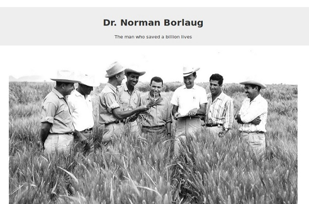

HTML PROJECTS: Tribute Page

Stats
- Knowledge required: HTML only
- Difficulty: Beginner friendly.
- Estimate project completion time: 2 hours
Skill focus of the project
Some of the HTML skills that you will practice while doing this project are:
- Adding different types of text to a web page. You will be practicing using text types like headings, lists, and links.
- Changing emphasis on text using bold and italics.
- Embedding an image on a web page and adding image captions.
Skill focus of the project
Some of the HTML skills that you will practice while doing this project are:
- Adding different types of text to a web page. You will be practicing using text types like headings, lists, and links.
- Changing emphasis on text using bold and italics.
- Embedding an image on a web page and adding image captions.
Main components of tribute page
You must include the following parts in your completed project:
- You must include a title or heading on the tribute page.
- You should include an image on the tribute page.
- You included image must have a caption.
- You should include a timeline of the life of the tribute in the form of a list.
The final project should look like this:

You can read the detailed technical requirements of the tribute page and tests you are required to pass on FreeCodeCamp.
Bonus practice
- Create a html Wikipedia page clone. 
- Create a html only Youtube page clone.
- Create a HTML-only Google Search Result page
- Create a HTML-only Signup form page
Where to publish your work
Codepen is the easiest one to setup. You just need an account to begin with. Then create a new pen and copy paste your HTML code there.
This one takes time to setup. However, you can use the Github.com web based editor to upload or copy paste your HTML.
Then you need to go to the repository setting to enable the projects to be viewed on (your-username).github.io/(repository-name).
If you are still stuck on what to do for your first HTML project, checkout my step by step illustrated guide on how to create your first HTML web page.
Examples of Tribute pages
- FreecodeCamp Example Project Link View screenshot
- Fiona Apple’s Tribute Page Project Link View screenshot
- Andriy Kuzmenko’s Tribute Project Project Link View screenshot
- Mahatma Gandhi’s Tribute page Project Link View screenshot Project Link View screenshot
- Steve Job’s Tribute Page Project Link View screenshot
{kind=link}
{kind=link}
{kind=link}
Share on:
Receive new content in your inbox
I send out an email when I create something new. Never any spam, easily unsubscribe any time.
SUBSCRIBEAbout
If you are just starting out you can test the waters by attempting the project-based HTML tutorial for beginners that I made just for you.
Okay, you got me there, I made it because it was fun and I enjoy helping you on your learning journey as well.
I have created a list of HTML and CSS projects that you can try out.